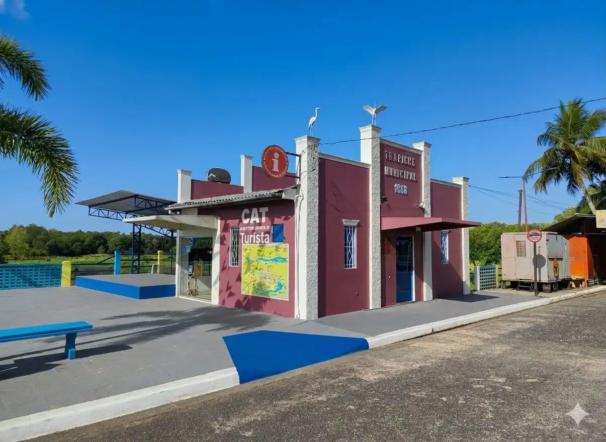

CAT - Centro de Atendimento ao Turista
O CAT (CENTRO DE ATENDIMENTO AO TURISTA) e Secretaria Municipal de Turismo ficam localizados na praça Christo Alves, na Orla de Curuçá. Funciona todos os dias, com diversas informações.
Horário de Funcionamento: Segunda a Sábado, das 08h às 18h.
